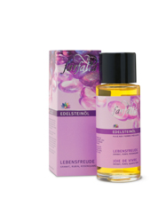
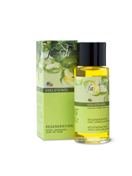
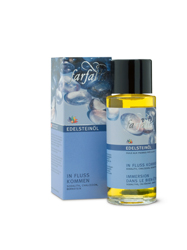
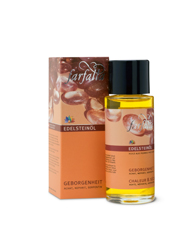
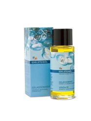
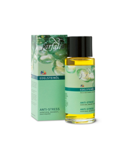
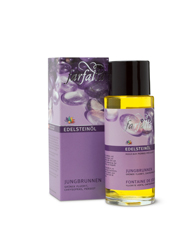

Gemstone Oils
Throughout the ages, gemstones have been associated with healing and balancing properties. These balancing characteristics counteract negative energy, stress and anxiety while enhancing the positive – beauty, wellness and happiness.
It is said that people are instinctively drawn to the gemstone with the properties they need – complementing their inner light and beauty. Cleopatra’s favorite gemstone, for example, was the Peridot, which is celebrated for it’s skin benefits and ability to heal, tone and and regenerate tissue.
For the first time, the special properties of gemstones have been transferred to a luxurious cosmetic oil: Farfalla Gemstone Oils combine the balancing characteristics of gemstones with nourishing and moisturizing Jojoba oil. Complementing essential oils and a small gemstone in each bottle enhance the effect.
Indulge both your skin and your senses – stay balanced and beautiful with a bath or massage with one of the unique Farfalla Gemstone Oils!
NaTrue
Gemstone Oil Joy of Life
Rediscover the joy of living! A bath or massage with this oil helps boost vitality, courage, sensuality and self-confidence. To enhance the effects, each bottle contains a small gemstone.
Application: As a massage oil or face care and body oil. Gemstones used: garnet, ruby, rose quartz. Essential oils used: rose, sandalwood, rose geranium, bergamot*. Ingredients: jojoba oil*, a blend of natural essential oils*.
* certified organic
INCI: Simondsia Chinensis*, Parfum* (Natural Essential Oils), Citral**, Geraniol**, Linalol**, Limonene**, Citronellol**. *certified organic, **from natural essential oils. |
 |
Gemstone Oil Regeneration
Re-awaken your mind and body! This oil energises, encourages and helps to re-establish control and productivity. To enhance the effects, each bottle contains a small gemstone.
Application: as a massage oil or face care and body oil. Gemstones used: epidote, ocean agate, zoisite with ruby. Essential oils used: ravintsara*, myrrh*, litsea cubeba. Ingredients: jojoba oil*, a blend of natural essential oils*.
* certified organic
INCI: Simondsia Chinensis*, Parfum* (Natural Essential Oils), Citral**, Geraniol**, Linalol**, Limonene**. *certified organic, **from natural essential oils |
 |
Gemstone Oil Positive Flow
Rediscover your personal centre! This oil stimulates positive energy and releases inner tension, helping to relax both mind and body. It encourages serenity and a feeling of ease. To enhance the effects, each bottle contains a small gemstone.
Application: as a massage oil or face care and body oil. Gemstones used: sodalithe, chalcedony, amber. Essential oils used: white fir*, geranium*, palmarosa*. Ingredients: jojoba oil*, a blend of natural essential oils*.
* certified organic
INCI: Simmondsia Chinensis Seed Oil*, Parfum* (Natural Essential Oils), Citral**, Citronellol**, Farnesol**, Geraniol**, Linalol**, Limonene**. *certified organic, **from natural essential oils |
 |
Gemstone Oil Security
Enjoy a sense of composure! This oil promotes emotional balance and stability, strengthens self-confidence and helps overcome fears. It enhances self-awareness and creativity. To enhance the effects, each bottle contains a small gemstone.
Application: as a massage oil or face care and body oil. Gemstones used: agate stone, nephrithe, serpentine (ophite). Essential oils used: vanilla*, sandalwood, benzoin. Ingredients: jojoba oil*, a blend of natural essential oils*.
* certified organic
INCI: Simondsia Chinensis*, Parfum* (Natural Essential Oils), Limonene**. *certified organic, **from natural essential oils. |
 |
Gemstone Oil Serenity
Enjoy personal tranquillity! This oil facilitates deep relaxation and helps restless minds achieve inner calm and a sense of perspective. To enhance the effects, each bottle contains a small gemstone.
Application: as a massage oil or face care and body oil. Gemstones used: magnesite, blue quartz crystal, dumortierite. Essential oils used: lavender*, rosewood, tangerine, roman camomile.
Ingredients: jojoba oil*, a blend of natural essential oils*.
* certified organic
INCI: Simondsia Chinensis*, Parfum* (Natural Essential Oils), Geraniol**, Linalol**, Limonene**. *certified organic, **from natural essential oils.
|
 |
Gemstone Oil Anti-Stress
Experience inner calm! This oil promotes the tranquillity and strength needed to tackle everyday stresses, while boosting stamina. To enhance the effects, each bottle contains a small gemstone.
Application: as a massage oil or face care and body oil. Gemstones used: aventurine, magnesite, cairngorm. Essential oils used: sweet orange*, rosewood, lavender*, ylang ylang*.
Ingredients: jojoba oil*, a blend of natural essential oils*.
* certified organic
INCI: Simondsia Chinensis*, Parfum* (Natural Essential Oils), Benzyl Benzoate**, Geraniol**, Linalol**, Limonene**. *certified organic, **from natural essential oils. |
 |
Gemstone Oil Fountain of Youth
Recapture feelings of your youth! This oil aids in purifying mind and body. It cleanses and purifies the skin, diminishes anxiety, frustration, and negativity, while enhancing vitality and well-being. To enhance the effects, each bottle contains a small gemstone.
Application: as a massage oil or face care and body oil. Gemstones used: green fluorite, chrysoprase, peridot. Essential oils used: juniper berry, sweet fennel*, lemon*. Ingredients: jojoba oil*, a blend of natural essential oils*.
* certified organic
INCI: Simondsia Chinensis*, Parfum* (Natural Essential Oils), Citral**, Linalol**, Limonene**. *certified organic, **from natural essential oils. |
 |
«Gemstone Cosmetics » – The feel-good-set
Beautifully designed set with seven Gemstone Cosmetics in miniature format at 10 ml. To test and try out or as a pretty feel-good present set, which is appreciated by everyone.
|
top> |